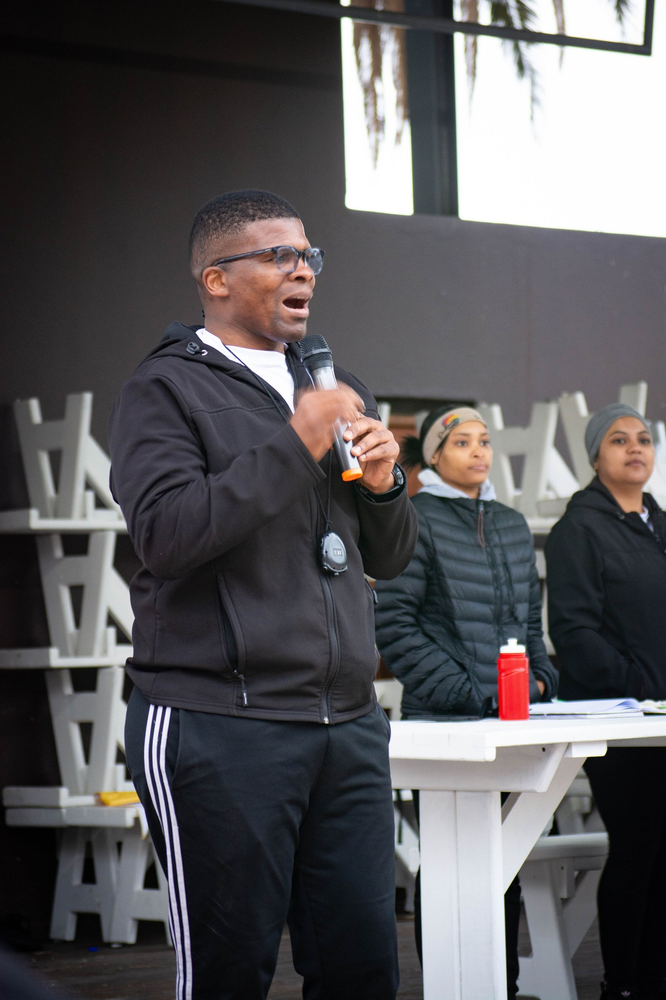
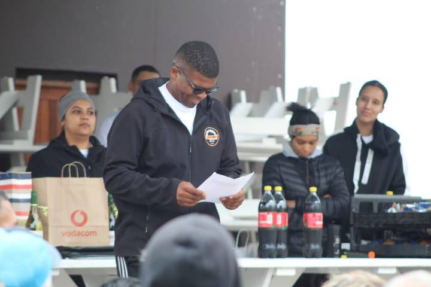
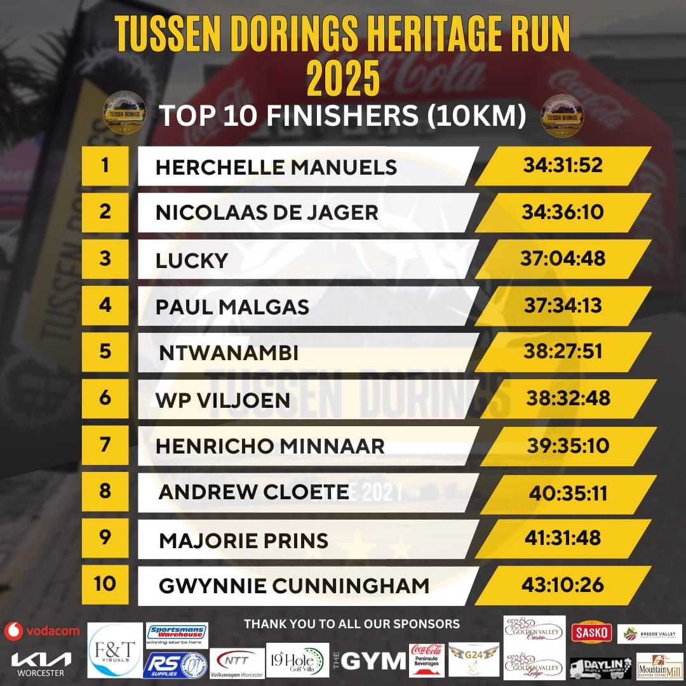
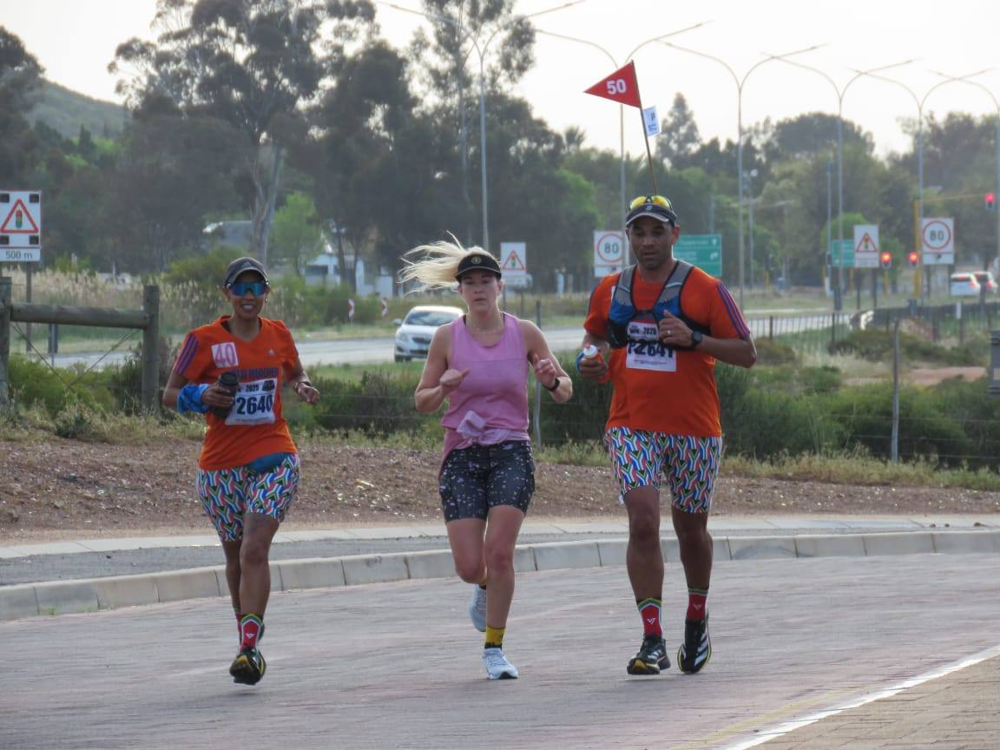
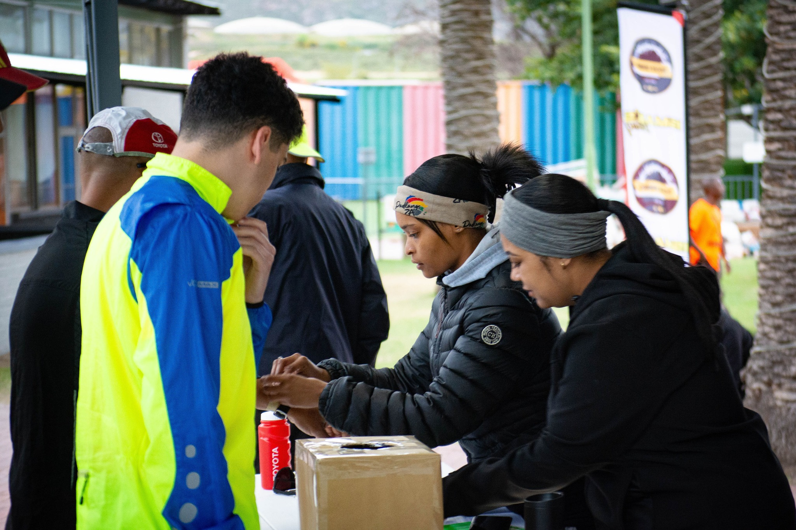
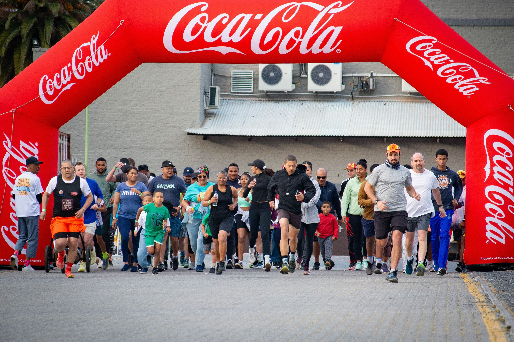
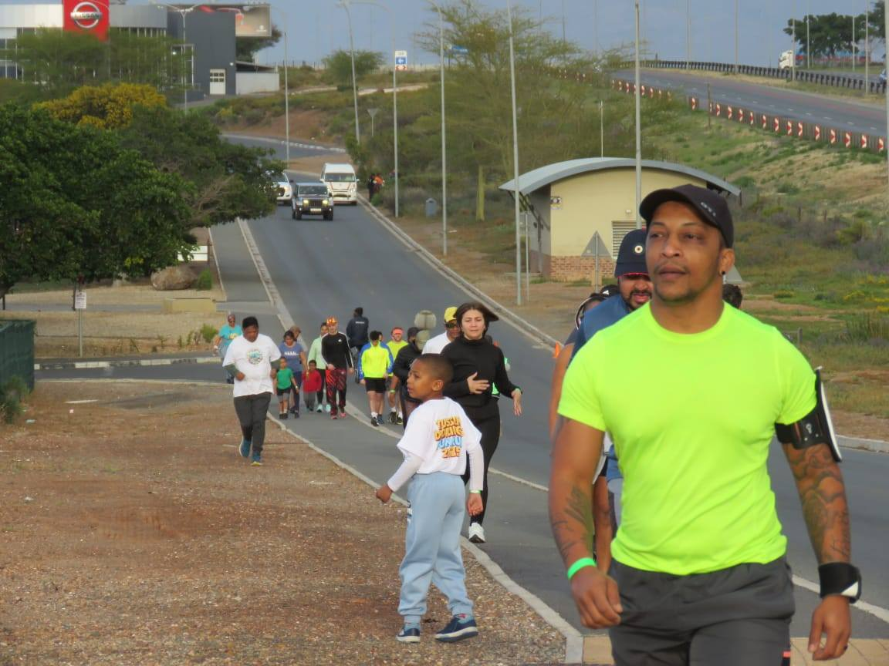

Latest Video
Onderhoud me Mahmud Fredericks.
Ons is hier om hoop te gee en jou te laat besef ons almal het verskillende Dorings op ons pad.
"We are here to give hope and to make you realise that we all have thorns in our paths."
Tussen Dorings exists to uplift communities in the Western Cape and beyond — sharing stories of ordinary people who faced extraordinary challenges and chose hope over despair. Every thorn in your path is also proof you are still walking.
Real voices. Real thorns. Real hope — every week on YouTube.
Ons is hier om hoop te gee en jou te laat besef ons almal het verskillende Dorings op ons pad.
Kom ons luister na die storie.
Kom ons luister na die storie.


Tussen Dorings, Afrikaans for "Between Thorns", was born in the heart of Worcester, Western Cape. We believe that every scar is a story, and every story deserves to be heard.
Through weekly stories, community events, and our podcast, we connect people across South Africa with the simple, powerful truth: you are not alone in your struggle. Hope is real. Help is near.
We plant seeds of hope in the hardest soil. No path is too broken to walk.
Thorns are easier to bear together. We believe in the power of community and belonging.
Real voices. Real struggles. No sugarcoating, because honesty is what heals.





Every episode is a raw, honest conversation about real life, the thorns, the tears, and the triumphs. Available on YouTube.
@tussendorings2924Lace up your running shoes and run for hope. Every step supports our mission to spread stories of resilience across the Western Cape.
View Event Details & RegisterShare it with us and help someone else find their way through the thorns.